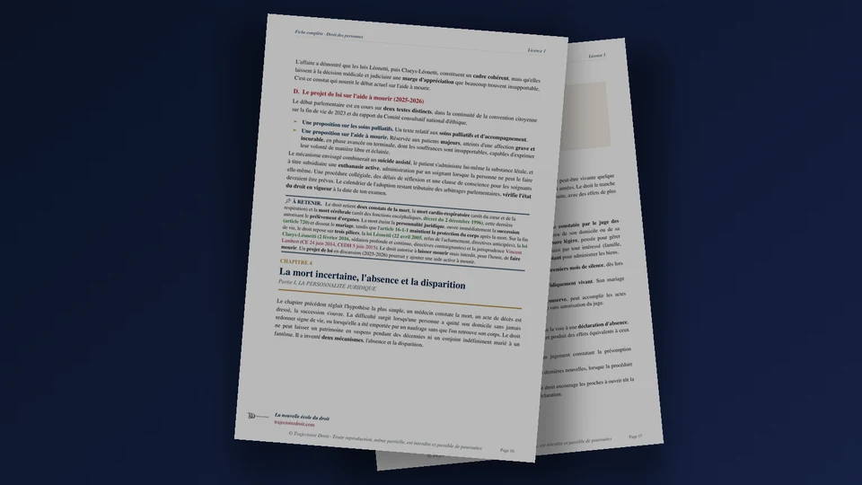
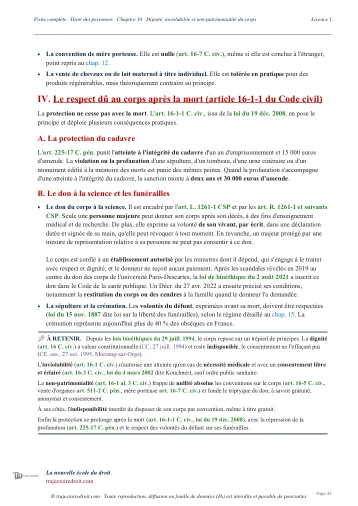

Comment réviser le droit des personnes L1 ?
Pour réviser le droit des personnes L1, il faut suivre les trois parties du programme. On commence par la personne physique ordinaire, puis on passe à la personne physique protégée, et on termine par la personne morale. Ensuite, pour chaque thème, on apprend les articles précis et les arrêts regroupés par sujet. Il faut aussi retenir le tableau des trois degrés de protection du majeur vulnérable et les confusions qui reviennent chaque année. Les annales, travaillées dans les conditions réelles du partiel, viennent en dernier.

La fiche complète de droit des personnes, L1
Le droit des personnes en 22 chapitres, de la naissance aux personnes morales
La fiche reprend le programme dans l'ordre du cours, de la personnalité juridique jusqu'à l'état civil. La protection du corps humain et les droits de la personnalité suivent, puis les incapacités. La compilation contient 10 cas pratiques et 3 sujets de partiel, tous corrigés.
- 96 pages, avec un plan détaillé et des cartes mentales
- Le pack complet (29,98 €) ajoute les flashcards, les fiches d'arrêt et les cas pratiques corrigés
- Accès à vie et mises à jour comprises
Paiement sécurisé. Tes fichiers sont envoyés par email dès la confirmation.
Les trois parties du programme, à repérer dès l'énoncé
Le droit des personnes L1 se divise en trois parties. Ce découpage organise toute la révision. La première partie porte sur la personne physique ordinaire, celle qui existe juridiquement et décide seule de sa vie. On y étudie la personnalité juridique, puis l'identification de la personne par son nom et son domicile, et enfin la protection du corps humain et les droits de la personnalité, comme le droit à l'image. La deuxième partie porte sur la personne physique qui a besoin d'une protection renforcée, c'est-à-dire le mineur puis le majeur vulnérable. Pour ce majeur, la loi prévoit trois degrés de protection, la sauvegarde de justice, la curatelle et la tutelle. La troisième partie porte sur la personne morale, par exemple une société ou une association, qui reçoit sa propre personnalité juridique pour agir. Or un cas pratique porte presque toujours sur l'une de ces trois parties. On repère laquelle dès la lecture de l'énoncé, en regardant quelle personne exactement est en cause.
Cette matière s'appuie aussi sur des articles très proches par leur numéro, mais très différents par leur portée. Ainsi, l'article 16 affirme la primauté de la personne et le respect de sa dignité, un principe général qui s'applique partout. La non-patrimonialité du corps humain, c'est l'interdiction de faire du corps, de ses éléments ou de ses produits un bien qu'on vend. L'article 16-1 organise ensuite l'inviolabilité du corps humain et sa non-patrimonialité. De la même façon, l'article 433 porte sur la sauvegarde de justice, alors que l'article 440 porte sur la curatelle et la tutelle. Avant de citer un article de mémoire, il faut donc toujours se demander s'il énonce un principe général ou s'il organise un régime précis. Ce réflexe évite une bonne partie des erreurs du programme.

Fiche complète
Droit des personnes L1
Dans quel ordre réviser, et à quel rythme
Le programme suit un ordre logique, de la personne libre vers la personne protégée, et on peut le reprendre tel quel pour organiser ses fiches. On commence par la personnalité juridique, qui s'acquiert à la naissance et se perd à la mort. On y ajoute l'absence et la disparition, deux mécanismes qui règlent les situations où l'on ne sait pas si la personne est encore en vie. Le deuxième bloc porte sur l'identification de la personne, c'est-à-dire son nom, son domicile et son état civil. Le troisième bloc rassemble la protection du corps humain et les droits de la personnalité, comme le droit au respect de la vie privée, le droit à l'image ou la protection de l'honneur. Enfin, on termine par les incapacités, avec le régime du mineur puis les trois degrés de protection du majeur vulnérable, et par la personnalité morale.
Le mieux est de faire la fiche de chaque thème juste après le cours magistral qui le traite. En effet, cette matière compte une trentaine d'articles à retenir avec précision, et un retard accumulé se rattrape plus difficilement qu'ailleurs. Pour retenir chaque notion, il faut éviter de relire la fiche en silence. On la transforme plutôt en questions fermées, puis on essaie d'y répondre de mémoire avant de vérifier la réponse. Cet effort pour retrouver la réponse aide bien plus à retenir qu'une simple relecture. Chaque thème se reprend ensuite à intervalles espacés, le lendemain, puis trois jours après et une semaine après, toujours avec cette même méthode de questions. Dans les trois semaines qui précèdent le partiel, il faut mélanger exprès les notions qui se ressemblent. On travaille ainsi ensemble la capacité de jouissance et la capacité d'exercice, ou l'absence et la disparition, ou encore les trois mesures de protection du majeur. La mémoire apprend alors à les distinguer, au lieu de les réciter chacune de son côté. La dernière semaine est réservée aux annales, dans les conditions réelles de l'examen.
Le tableau des trois mesures de protection du majeur vulnérable
Les trois mesures de protection du majeur vulnérable reviennent dans une bonne partie des sujets du semestre, en dissertation comme en cas pratique. Ce tableau s'apprend critère par critère, plutôt que mesure par mesure. Ainsi, quand un énoncé demande quel degré de protection une personne nécessite, on trouve vite la réponse.
L'erreur la plus fréquente en copie porte sur le choix entre ces trois mesures. Le principe de subsidiarité veut qu'une mesure plus lourde soit possible seulement si la mesure plus légère ne suffit pas. La loi impose en effet ce principe de façon stricte. Le juge part donc toujours de la mesure la plus légère. Il prononce une tutelle seulement s'il est établi que ni la sauvegarde de justice ni la curatelle ne suffisent à protéger la personne, et une curatelle seulement si la sauvegarde ne suffit pas. Cette hiérarchie organise directement le raisonnement attendu dans un cas pratique, quand l'énoncé demande de choisir le régime adapté à une situation.
Il existe aussi une quatrième mesure, absente de ce tableau, l'habilitation familiale des articles 494-1 et suivants. Avec elle, le juge autorise directement un proche à représenter ou à assister la personne vulnérable. Ce proche peut être un ascendant, un descendant, un frère ou une sœur, le conjoint, le partenaire de PACS ou le concubin. Le suivi du juge est alors beaucoup moins lourd que dans une tutelle classique. Cette mesure reste elle aussi subsidiaire, donc elle joue seulement si les règles ordinaires de représentation entre proches, comme celles du régime matrimonial, ne suffisent pas.
Apprendre les arrêts sans les confondre
En droit des personnes, l'erreur la plus fréquente consiste à apprendre les arrêts dans l'ordre chronologique du cours, sans les relier au thème qu'ils construisent et sans dire ce que chacun apporte. On les regroupe plutôt par thème, comme ci-dessous. Pour chaque arrêt, on retient son nom et sa date, puis son apport en une phrase. Une copie qui cite un arrêt sans expliquer son apport reste en effet presque toujours sous la moyenne.
Sur les limites de la personnalité juridique, il faut retenir l'arrêt d'assemblée plénière du 29 juin 2001 (n° 99-85.973). La Cour de cassation y refuse d'appliquer l'infraction d'homicide involontaire à un enfant à naître, mort des suites d'un accident. Elle s'appuie en effet sur le principe de légalité des délits et des peines, qui oblige le juge pénal à appliquer strictement les textes. Or l'embryon et le fœtus relèvent de textes particuliers, distincts du régime de la personne déjà née. De plus, sur la réparation du préjudice lié à la naissance, l'arrêt Perruche (Cass. ass. plén., 17 novembre 2000) a reconnu pendant un temps un droit à l'enfant né handicapé. Quand une faute médicale avait empêché sa mère d'interrompre sa grossesse, il pouvait demander réparation du préjudice causé par son handicap. La loi du 4 mars 2002 a cependant écarté cette solution pour l'essentiel. Aujourd'hui, l'enfant ne peut plus invoquer un préjudice du seul fait de sa naissance, sauf faute caractérisée ayant directement provoqué le handicap.
Pour la protection du corps humain, il faut retenir l'arrêt du Conseil d'État dit Morsang-sur-Orge (CE, ass., 27 octobre 1995). Il interdit une attraction de lancer de nains, malgré le consentement de la personne lancée, parce que la dignité humaine fait partie de l'ordre public et que personne ne peut y renoncer pour soi-même (fiche complète). Un cadavre plastiné est un corps conservé par un procédé technique. Sur l'exposition commerciale de corps humains, l'arrêt dit Our Body (Cass. 1re civ., 16 septembre 2010) s'appuie sur l'article 16-1-1 du Code civil pour interdire de montrer, dans un but lucratif, des cadavres plastinés. Il se fonde ainsi sur le respect dû au corps humain après la mort.
Sur l'identité de la personne, l'arrêt d'assemblée plénière du 11 décembre 1992 (n° 91-11.900) admet pour la première fois qu'une personne transsexuelle obtienne la modification de la mention de son sexe à l'état civil, au nom du respect de la vie privée. Il exige alors qu'un traitement médico-chirurgical ait fait disparaître les caractéristiques de son sexe d'origine. La loi du 18 novembre 2016 a supprimé cette condition médicale. Depuis, les articles 61-5 à 61-8 du Code civil permettent de changer la mention du sexe si la personne montre, par une réunion suffisante de faits, qu'elle se présente sous l'autre sexe et qu'elle est connue ainsi. Par exemple, ses proches et ses collègues la connaissent sous ce sexe, et elle a déjà changé de prénom. Le juge ne peut donc plus refuser la demande au motif que la personne n'a suivi aucun traitement médical ni subi d'opération. En revanche, dans l'arrêt du 4 mai 2017 (n° 16-17.189), la Cour de cassation refuse toute mention de « sexe neutre » à l'état civil, parce que le droit français reste construit sur deux sexes. Ces deux arrêts se retiennent ensemble, car ils montrent que le respect de la vie privée fait évoluer l'état civil, sans supprimer pour autant ses catégories de base.
Enfin, deux arrêts récents organisent la filiation de l'enfant né par gestation pour autrui à l'étranger. Transcrire la filiation, c'est l'inscrire sur les registres français. Les parents d'intention sont le couple qui a voulu l'enfant. L'arrêt Mennesson (Cass. ass. plén., 4 octobre 2019, n° 10-19.053) admet la transcription complète de la filiation à l'égard des deux parents d'intention. Il le fait en raison des circonstances particulières de cette affaire, ouverte depuis plus de quinze ans. L'arrêt du 14 novembre 2024 précise ensuite que l'absence de tout lien biologique entre l'enfant et son parent d'intention n'empêche pas, à elle seule, de reconnaître en France une décision étrangère qui établit cette filiation. Le juge français doit toutefois vérifier l'absence de fraude et le consentement de la mère porteuse. Ces arrêts et l'ensemble du cours se trouvent dans la fiche de droit des personnes L1.
Les confusions qui coûtent le plus de points
Je retrouve chaque année les six confusions qui suivent quand je corrige des copies. Une copie qui les évite gagne des points faciles, car le correcteur voit tout de suite que l'étudiant connaît les points délicats de la matière.
Capacité de jouissance et capacité d'exercice
Il faut toujours distinguer ces deux notions avant de qualifier une situation. La capacité de jouissance désigne l'aptitude à être titulaire d'un droit. Elle appartient à toute personne dès sa naissance, y compris à un mineur ou à un majeur protégé. La capacité d'exercice désigne l'aptitude à exercer soi-même ce droit, sans représentation ni assistance. Si un mineur hérite d'un bien, il en devient propriétaire, donc il a la capacité de jouissance de ce droit de propriété. En revanche, il n'a pas la capacité d'exercice nécessaire pour vendre ce bien seul, si bien que son représentant légal agit à sa place.
Absence et disparition, deux incertitudes traitées très différemment
Ces deux mécanismes répondent à deux incertitudes différentes. Les articles 112 et suivants organisent l'absence, quand une personne a cessé de paraître à son domicile sans donner de nouvelles, et qu'on ne sait pas si elle est morte ou vivante. Le juge constate d'abord une présomption d'absence, puis, après un délai, il prononce une déclaration d'absence qui produit les effets d'un décès. Les articles 88 et suivants organisent au contraire la disparition, quand une personne a disparu dans des circonstances qui rendent sa mort presque certaine, comme un naufrage ou une catastrophe, sans que son corps ait été retrouvé. Le juge peut alors déclarer directement le décès, sans passer par les étapes plus longues de l'absence.
Changement de nom et changement de prénom, deux procédures distinctes
Ces deux démarches reposent sur des textes différents et sur des contrôles différents. L'article 60 organise le changement de prénom. La demande se fait auprès de l'officier d'état civil, qui saisit le procureur de la République s'il estime la demande contraire à l'intérêt de l'enfant ou aux droits des tiers. La loi du 2 mars 2022 a ensuite créé, à l'article 61-3-1, une procédure de changement de nom entièrement distincte. Elle permet à un adulte de prendre l'un des noms que sa filiation lui transmet. Il peut le faire une seule fois dans sa vie, et l'officier d'état civil ne contrôle pas ses raisons, alors que le changement de prénom reste soumis à ce contrôle.
Le domicile légal du mineur, parfois différent du lieu où il vit
Avant de répondre, il faut toujours vérifier qui fixe le domicile. D'après l'article 102, le domicile est le lieu du principal établissement d'une personne, celui qu'elle choisit librement. Ce principe connaît deux exceptions, puisque le mineur non émancipé a son domicile légal chez son représentant, et le majeur sous tutelle chez son tuteur. Un étudiant mineur qui loue une chambre universitaire dans une autre ville garde donc, sur le plan juridique, le domicile de ses parents, même s'il vit ailleurs au quotidien.
Vie privée et droit à l'image, une protection générale et une protection autonome
Ces deux protections restent séparées dans la copie, même si elles ont le même point de départ. L'article 9 protège la vie privée dans son ensemble. Elle comprend notamment la vie sentimentale, la santé, le domicile ou les convictions religieuses. Le droit à l'image vient historiquement de cette protection, mais la jurisprudence en a fait un droit autonome. Il reste rattaché à l'article 9, tout en étant protégé même quand la vie privée n'est pas atteinte. Ainsi, une photo prise dans un lieu public peut porter atteinte au droit à l'image d'une personne, sans révéler aucune information sur sa vie privée.
La personnalité juridique et la protection du corps avant la naissance
La personnalité juridique s'acquiert à la naissance, à condition que l'enfant naisse vivant et viable, c'est-à-dire capable de survivre. Le droit protège pourtant le corps de l'embryon et du fœtus avant cette naissance, grâce à des textes particuliers, distincts du régime général de la personne, comme le rappelle l'arrêt d'assemblée plénière du 29 juin 2001 vu plus haut. Dans la copie, ces deux niveaux de protection se présentent donc séparément.
T'entraîner sur des annales, dans les conditions du partiel
Les annales corrigées de droit civil L1 entraînent à restituer le cours dans le format exact de l'examen, en temps limité et sans fiches. Pour qu'elles servent vraiment, il faut respecter trois habitudes.
D'abord, il faut toujours traiter le sujet avant de regarder le corrigé. Quand on lit un corrigé sans l'avoir cherché soi-même, on apprend très peu, parce qu'on évite la difficulté principale, à savoir partir d'une page blanche et trouver seul le bon article. Ensuite, on s'entraîne aussi bien sur le cas pratique, l'exercice le plus fréquent de la matière, que sur le commentaire d'arrêt et la dissertation. Enfin, chaque entraînement se fait dans le temps imparti, comme le jour de l'examen. On apprend ainsi à rédiger vite tout en qualifiant les faits clairement. La page des sujets de droit des personnes L1 propose douze sujets par thème et un cas pratique corrigé en entier pour s'exercer dans ces conditions.
Reconnaître le type de sujet pour choisir le bon plan
Les sujets de droit des personnes reprennent souvent les mêmes structures, d'un partiel à l'autre et d'une fac à l'autre. Si on reconnaît le type de sujet dès la lecture de l'énoncé, on gagne du temps, car on sait tout de suite quel plan construire.
Le sujet « notion », par exemple la personnalité juridique ou le droit à l'image, appelle un plan en deux temps, avec la notion d'abord et son régime ensuite. Le sujet « comparaison », comme sauvegarde de justice et curatelle, ou absence et disparition, demande un plan parallèle. On y examine les deux notions sur les mêmes points, à savoir la cause, le régime et les effets. Enfin, le sujet « évolution » suit un plan chronologique, de l'état ancien à l'état actuel du droit. C'est le cas d'un sujet sur l'ouverture progressive de l'état civil aux nouvelles réalités biologiques et familiales. La majeure, c'est la règle de droit. Pour le cas pratique, il faut toujours qualifier la personne en cause avant de chercher la majeure, comme l'explique la méthode du cas pratique.
Questions fréquentes sur la révision du droit des personnes L1
Combien de temps avant le partiel faut-il commencer à réviser le droit des personnes L1 ?
Faut-il apprendre tous les arrêts par cœur en droit des personnes L1 ?
Quelle est la différence entre sauvegarde de justice, curatelle et tutelle ?
Quelles sont les confusions qui font perdre le plus de points en droit des personnes L1 ?
La méthode te donne le chemin, et les fiches te donnent la matière déjà construite dans cet ordre.
Les fiches complètes de droit des personnes L1 reprennent chaque thème de la personnalité juridique aux personnes morales, le tableau des mesures de protection, les arrêts regroupés et chaque confusion levée, pour que tu n'aies plus à reconstruire seul ce travail.
Voir les fiches de droit des personnes L1